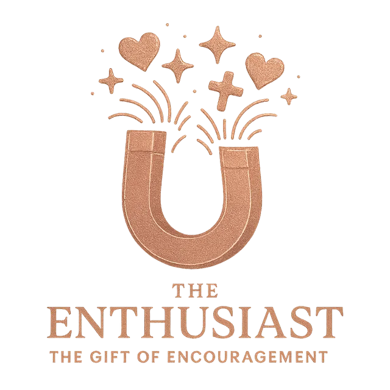

The Enthusiast operates under a divine mandate to champion the potential in others and foster meaningful connections. They are natural connectors and motivators, driven by a genuine love for people and an unshakeable belief in their capacity to grow and succeed.
"If it is to encourage, then give encouragement." — ROMANS 12:8
"Therefore encourage one another and build each other up, just as in fact you are doing." — 1 THESSALONIANS 5:11
The Enthusiast instinctively evaluates situations based on their potential for creating meaningful connections and positive relationships. They naturally think in terms of building bridges and fostering unity.
Enthusiasts are energized by being around positive, growth-minded people who share their optimism and desire for meaningful relationships. They thrive in environments of mutual encouragement.
They are compelled to create environments where people feel valued, connected, and motivated to reach their potential. Their greatest joy comes from seeing others succeed and relationships flourish.
They possess an extraordinary gift for inspiring others and helping them believe in their own potential and possibilities.
They excel at creating meaningful connections between people and fostering environments of trust and collaboration.
They bring an infectious optimism and enthusiasm that lifts the spirits of those around them and creates positive momentum.
They have a remarkable ability to see the best in people and help them recognize and develop their own gifts and capabilities.
Their desire to maintain positive relationships can lead them to avoid necessary but challenging conversations.
Their positive outlook can sometimes lead them to overlook real problems or minimize legitimate concerns.
They may struggle to set boundaries or make decisions that might disappoint others, even when those decisions are necessary.
Encouragement-oriented leaders inspire through relationships and positive vision.
Every gift carries a holy conviction—and every conviction can collide with another's. Naming the clash is the first step toward honoring it.
The Enthusiast's primary drive is to "encourage one another and build each other up." They strive to create a positive, hopeful atmosphere. This is in direct conflict with the Catalyst, who is compelled to speak raw, often disruptive, truths to spark transformation, regardless of how it impacts the harmony of the group.
For the Enthusiast, the quality of connection and team morale is paramount. They believe a happy team is a productive team. This can create friction with the Servant, who is laser-focused on completing the practical tasks at hand and can view the Enthusiast's efforts at team-building as a time-wasting distraction from the actual work.
Enthusiasts are verbal processors who gain energy from interaction and expressive brainstorming. This can overwhelm the Erudite, who needs quiet solitude to think deeply and can find the Enthusiast's high energy to be a significant disruption to their intellectual process.
The Enthusiast is a wellspring of inspirational, optimistic ideas, often focused on creating joyful experiences. This can clash with the Host, whose first question is about the budget, the plan, and the wise stewardship of resources. The Enthusiast's excitement can feel untethered from reality to the pragmatic Host.
An Enthusiast in a meeting may see an opportunity for spontaneous connection or celebration and want to pursue it. This directly conflicts with the Strategist, who is focused on diligently moving through the fixed agenda in a timely and efficient manner to achieve the meeting's goals.
When encountering someone in pain, the Enthusiast's instinct is to cheer them up, offer encouragement, and paint a picture of a hopeful future. This can be jarring for the Lover, whose primary need is to have their painful feelings seen, validated, and sat with—not to be cheered out of them. The Enthusiast's good intentions can feel like a dismissal of the Lover's actual emotional state.
The Enthusiast appears in 15 of the 35 archetypes of the soul. When it joins two other dominant gifts, it takes on a distinct expression.
To translate complex truths into compelling, hopeful narratives that rally people to a cause.
Read the archetype → 8To fuse a bold, strategic vision with an infectious passion that mobilizes and inspires teams.
Read the archetype → 12To develop people by combining clear, strategic guidance with inspiring, motivational coaching.
Read the archetype → 16To create a culture of celebration and community through tireless service and lavish hospitality.
Read the archetype → 19To challenge injustice and speak hard truths, fueled by a deep love for people and a desire to rally them to a better way.
Read the archetype → 20To offer holistic care for others through uplifting encouragement, empathetic presence, and tangible acts of service.
Read the archetype → 21To create a safe and uplifting space where deep empathy is paired with wise, insightful counsel.
Read the archetype → 22To build community by generously creating beautiful, welcoming experiences where people feel cherished and connected.
Read the archetype → 23To lead teams toward a goal by fostering a culture of profound psychological safety, connection, and inspiration.
Read the archetype → 24To inspire people to join a transformative cause through joyful, hands-on work and infectious optimism.
Read the archetype → 26To fund and celebrate revolutionary new ventures, inspiring others to invest in a bold vision of the future.
Read the archetype → 28To make work and learning enjoyable and effective through clear instruction, practical help, and positive reinforcement.
Read the archetype → 30To wisely invest in the potential of others, providing both the resources and the inspiration needed for them to flourish.
Read the archetype → 32To lead teams to execute a plan with excellence by fostering a positive, high-morale, and collaborative environment.
Read the archetype → 34To build and grow organizations by aligning a compelling vision, strategic resources, and an inspired culture.
Read the archetype →And let us consider how we may spur one another on toward love and good deeds.Hebrews 10:24: